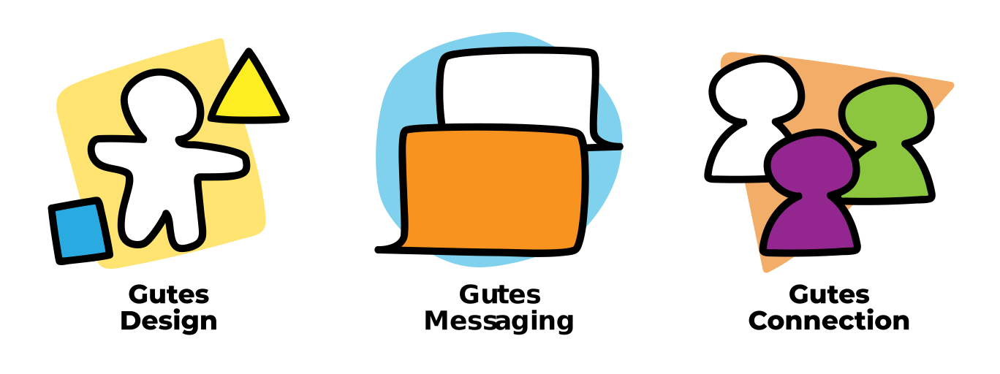

Meshi the Mesh Monster
Projekt Overview
8 Monate / Als Teil der Interdisziplinäre Projektmodul / Solo Projekt
Ein Kollaborationsprojekt mit MedAustron für den Art & Science Masterstudium. Ein Trostspielzeug für Kinder aus Material, die in Ionenstrahltherapie für Krebs in empfindliche Organe benutzt ist.
Zum ProjektseiteEntdeckung und Problemstellung
Erstens, hatten wir als Klasse die Einrichtung von MedAustron besucht und ihre medizinische Aussrüstung und Team präsentiert. Ich beobachtet die Informationsvermittlung bzw. ob sie verständlich war und dazu auch was für Hilfsmittel oder Präsentationsmittel sie benutzten, um diese Information effektiv zu kommunizieren. Ich sah, dass sie am meistens Präsentations and Papiere benutzten, aber wenn es über die Patientenversorge bzw. pädiatrische Patienten war, wirkten sie eher scheu und entschuldigend. Als einer der Eltern or Betreuer meines Kindes, würde ich nicht bei meinem Arzt überzeugt.
In einer technische Bericht über Kommunikation mit Kinder und Familien, das Amerikanische Akademie für Pädiatrie (American Academy of Pediatrics) sagt, dass eine effektive, empathische Kommunikation führt zu positiven Ergebnisse. Dazu gehört:
- Die Teilnahme der Kinder. Eine Studie, in dem Kinder sich über ihre Gesundheit durch altersgerechten Arbeitsbücher, Videos und Rollenspiele informiert, haben sie eine höheren aktiven Teilnahme, erinnern sie ihre Medikament Regiment mehr und haben eine guten Verhältnis zu ihre Ärtze im gegenseits zu ihre Kontrollgruppe, bzw. 77% und 47%.
- Klare Indikationen von Empathie und Respekt führt zu bessere Kommunikation. Beispiele inkludieren die Benutztung von Visuelle Hilfsmittel, Diskussionen von alternative Wegen und die Vor- und Nachteile, und das Erkennen von emotionale Leid.
- Die Benutzung von Hilfsmittel für Kommunikation. Bei einer Studie, namm die Ärtze ihre Gespräche in ein Tonband für die Eltern ihre Kinder auf, und wurde bei der Eltern allgemein zugehört. Die Großeltern hörten sie mehr als die Hälfte der Zeit an (52,8%), 70% wurden mehr als einmal angehört, und ein Drittel der Eltern fertigte eine Kopie an, um sie selbst zu behalten. Die Kassetten wurden in mehr als 99 % der Fälle als hilfreich empfunden.
Grundsätzlich, gibt es konkrete Beispiele, die der Kommunikation zwischen Art und Patient hilft.
Development
Forschung
Personas
Alex
- Spitalpfleger
- Arbeitet in die Alltagsroutine der Patienten
- Ist im regelmäßiger Kontakt mit Ärtzen, Kinder und ihre Eltern
Andreas
- 7-jähriges Kind
- Patient MedAustron, und wird Ionenstrahltherapie durchgehen
- Verbringt seine Tage mit anderen Patienten im Spital.
Ben
- Eltern von Klaus
- Will über den Therapie Kind Klaus informiert bleiben
- Hat große Sorge für Klaus, nimmt Zeit aus seiner Arbeit um ihn zu besuchen
Weil ich nicht direkt mit dem Kinder arbeiten kann, arbeite ich stattdessen mit dem Patienten Team, die die Kinder pflegen. Als Designer und Künstler bin ich nicht für die Patienten-Kommunikation verantwortlich, dennoch möchte ich etwas bauen die die Patienten und Patienten Team hilft. Als einer Person die in ihre Freizeit mit Geschichten verbringt, gibt es bei Krebs verschiedene Repräsentationen die problematisch sind. Krebspatienten sind oft als Tragödie repräsentiert und haben oft keine andere Merkmale als Figur und das hat ein Einfluss an wie Menschen über Krebs denken. Dies zu navigieren ist essentiell für ein gutes Patient-Artz Kommunikation.
Eines Teils dieser Ionenstrahltherapie ist die Benutzung von ein Thermoplast, die auf der Patient gelegt wird, um so dass Sie auf den Bett festgesichert ist. Nach recherche des Materials fand ich heraus, dass:
- Das Thermoplast 'Varaform' ist das fast gleiche Material, die in der Ionenstrahltherapie benutzt wird.
- MedAustron eine Maskottchen die Protoni heißt hat.
- Varaform ist auch für Kostümbau und in Kunst und Handwerk verwendet.
Diese Projekt war während des COVID-19, in dem verschiedene Gesundheitsinformationen in ihre Präsentationen erstellt wurden. Dazu gehörte auch die Visualisierung der Virus und die Maßnahme zur ihre Bekämpfung und Schutz von dieser Virus, und einer der Methoden war der Benutzung von Maskottchen. Durch ein qualitative Analyse fand ich, dass ein gutes Maskottchen hatten die folgenden Aspekten:
Das Maskottchen soll Reiz haben.
Das Maskottchen soll klare Ideen und Zwecken kommunizieren.
Das Maskottchen soll eine Verbindung mit ihre Zielgruppe bauen.
Production
Ein Maskottchenkonzept wurde schon gezeichnet und es den Patienten Team gezeigt. Das Konzept des Meshi ist ein freundliches und geschlecht-neutrales Gesicht mit Protoni arbeitet. Zusätzlich hat Meshi ein Käppchen, in dem Familie und Freunden gute Besserungen schreiben. Den Team hatte die Idee, dass die Patienten ihren eigenen Meshi bauen als Vorstellung der Material.
Hier ist was Meshi tun soll:
- Das bauen der Meshi soll so günstig wie möglich sein und auch sicher.
- Meshi soll der Die Verbindung des Material zum Ionenstrahltherapie vereinfachen und ihre Vielfältigkeit darstellen durch ein haptisches Komponent.
- Den Team helfen, den Patient während ihre Therapie zu beruhigen.
- Das Maskottchen der MedAustron Protoni mehr aktiv in der Therapieprozess sein.
- Zusammen mit den pädiatrische Patient Team das Maskottchen solle auch als Paar mit den anderen Maskottchen Protoni designt.
Projekt Output
Trostspielzeug
Für Meshi, sammelte ich und baute den Meshi mit Varaform, Origamipapier und Bände. Auf ein Videocall lehrte ich den Patienten Team, wie man ein Meshi bastelt, sodass Sie die Patienten auch beibringen.


Malbuchseiten
Ein Malbuch von Meshi und Protoni wurde hergestellt um Meshi vorzustellen und als Aktivität für die pädiatrische Patienten.
Das Projekt wurde in der Ausstellung, "Outlines of absence, contours of presence" zusammen mit dem Art & Science Masters präsentiert.
Projektauswirkungen
Mit Meshi
- erleichtert die Patientenroutine und machte es nahlos.
- War Kinder eher ruhiger weil es für den Ionenstrahltherapie vorbereitete.
- War den Ionenstrahltherapie nicht nur für die Kinder aber auch ihre Familie mehr verständlicher und hatten auch eine mehr aktive Rolle bei der Therapie.
Was ich gelernt habe
- Als Designer habe ich Verantwortungen die mir nicht entsprechen konnten, und dass als Teils des Prozesses ihre Auswirkungen auch evaluieren soll.
- Kontexte von verschiedene Bereichen kann oft überschneiden und dass zum Vorteil benutzten kann.